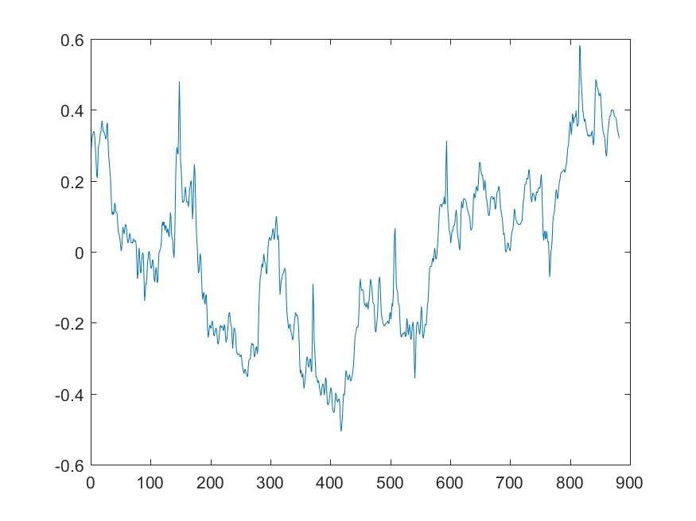
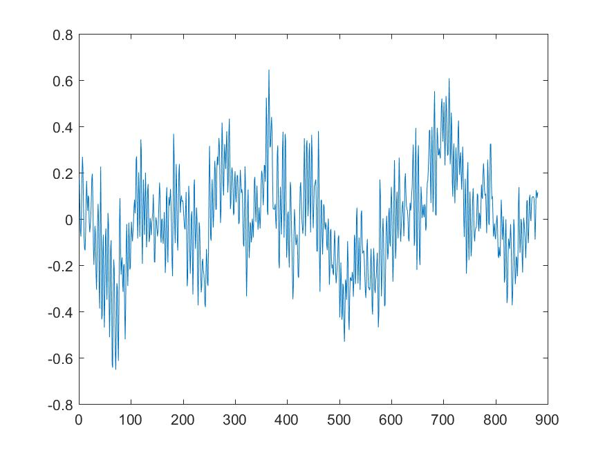
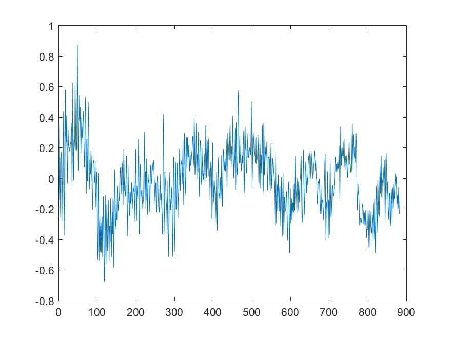

| Orignal sound signal: which has three parts where first one and last one is music and second one is speech | ||
| The original sound signal is smoothen and splited into sound frames with frame duration of 20ms and some of the frame from amount 1500 frames are below |
||
|  |  |  |
| The final result. the music and speech are segmented from the audio signal as shown in the figure below 1. first one is the original signal 2. second on right is first part of the music 3. third left is the speech and 4. last one is the music |
||